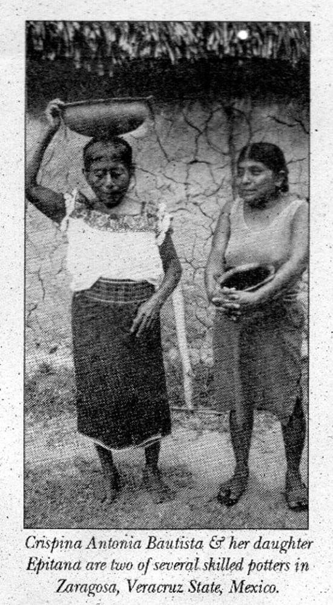
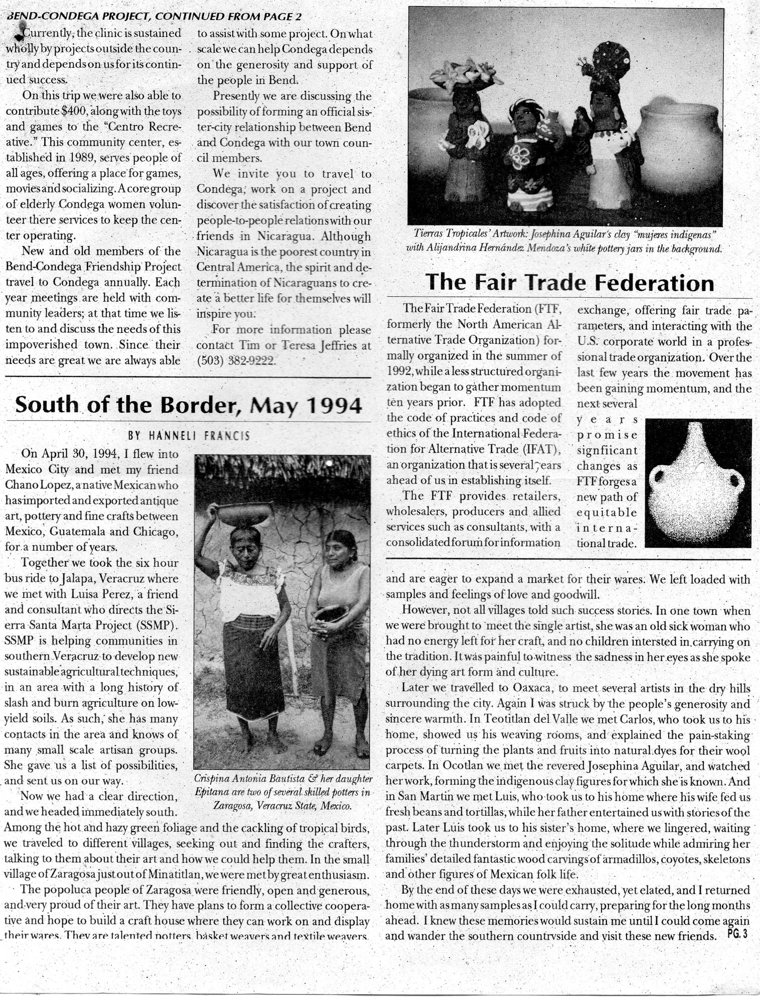
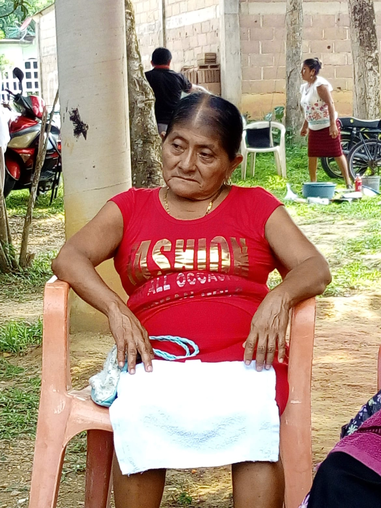

La Alfarería en la Memoria
Doña EPIFANIA BAUTISTA, un icono en la historia de la alfarería tradicional de Xumuapan.



En el mes de abril del año 1994 por conducto de nuestra querida amiga Luisa Paré llegó una visita proveniente de Oregón, Estados Unidos. Ella es Hanneli Francis quien dijo ser representante de una empresa denominada Tierras Tropicales, comercializadora de artesanías de varios países latinoamericanos.
En esa ocasión le toco visitar nuestro municipio ubicado en el sur de Veracruz y entre otros compañeros fuimos anfitriones de su estancia en el pueblo de Zaragoza. Estuvo aproximadamente dos semanas conviviendo con algunos habitantes en su mayoría artesanos y artesanas Zaragoceños y posteriormente se trasladó a Oaxaca.
Como ella lo reafirma en un artículo que escribió en una revista llamada Tierras Tropicales, llego a nosotros con la finalidad de apoyar a las artesanas y de entre varias artesanías que conoció, el que más le impresionó y gustó fue el de la alfarería por su diseño, textura y color.
El trabajo en mención fue de las alfareras contemporáneas del grupo “Xuchitahli”, Flor de la tierra, una generación de alfareras formada en talleres de aprendizaje y que revolucionaron con esta técnica ancestral la producción de nuevas piezas acordes a nuevos tiempos de la sociedad. Esta innovación motivó a Hanneli hacerles un pedido de un buen lote de variadas piezas para su envío por paquetería a Oregón, Estados Unidos. Esta fue la primera experiencia de exportación de artesanías de la alfarería de Zaragoza.
Cabe describir que desde este tiempo empezaba a desarrollarse un cambio en el modo de práctica de vida de la artesanía. De ser una actividad individual o familiar pasaba a ser colectiva más allá de lazos consanguíneos y este fenómeno se estaba dando principalmente en el telar de cintura y la alfarería ocupada en su mayoría por mujeres.
Aquí un fragmento del artículo traducido al español que ella escribió de su estancia por este lugar y una fotografía de la alfarera Epifanía Bautista (+) y su hija Crispina Antonio Bautista portadoras de la alfarería estricta y auténticamente tradicional de Xumuapan.
Abril 30 de 1994. Volé a la ciudad de México y conocí a un amigo Chano López, un mexicano nativo que ha importado y exportado arte antiguo, cerámica y artesanía fina entre México, Guatemala y Chicago, durante varios años.
Juntos tomamos el viaje en bus de seis horas a Xalapa, Veracruz, donde nos reunimos con Luisa Pare, una amiga y consultora que dirige los proyectos de Sierra Santa Marta (SSMP). SSMP está ayudando a las comunidades del sur de Veracruz a desarrollar nuevas técnicas agrícolas sostenibles, en un área con una larga historia de agricultura de roza y quema en suelos de bajo rendimiento. Como tal, tiene muchos contactos en el área y conoce muchos grupos de artesanos a pequeña escala. Ella nos dio una lista de posibilidades y nos envió en camino.
Ahora teníamos una dirección clara y nos dirigimos inmediatamente hacia el sur. Entre el follaje verde cálido y brumoso y el cacareo de las aves tropicales, viajamos a diferentes pueblos, buscando y encontrando a los artesanos, hablándoles sobre su arte y cómo podríamos ayudarlos. En el pequeño pueblo de Zaragoza, a las afueras de Minatitlán, nos recibió con gran entusiasmo.
La gente Nahua de Zaragoza era amable, abierta y generosa, y muy orgullosa de su arte. Tienen planes de formar una cooperativa colectiva y esperan construir una casa de artesanías donde puedan trabajar y exhibir sus productos. Son alfareros talentosos, tejedores de cestas y tejedores de textiles y están ansiosos por expandir un mercado para sus productos. Salimos cargados de muestras y sentimientos de cariño y buena voluntad.
Sin embargo, no todas las aldeas contaron historias de éxito. En un pueblo, cuando fuimos traídos para conocer a la artista soltera, ella era una anciana enferma a la que no le quedaban energías para su trabajo y ningún niño interesado en continuar la tradición. Fue doloroso presenciar la tristeza en sus ojos mientras hablaba de su forma de arte y cultura moribunda.
Publicación de DPA - Xumuapan y Tiangisti Nucha Tamachiwalis
Del muro de Facebook: Erasto Antonio
Técnicas y Procesos
Modelado a Mano
La técnica más antigua, utilizando solo las manos y herramientas simples para dar forma al barro, sin el uso de torno.
Bruñido con Piedra
Después del secado inicial, las piezas se pulen con una piedra de río lisa para darles un brillo natural y cerrar los poros.
Quema a Cielo Abierto
Las piezas se cuecen en hornos rústicos o directamente sobre el suelo con leña, un método que otorga colores y texturas únicos.